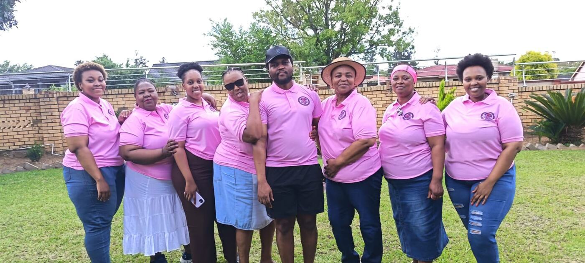
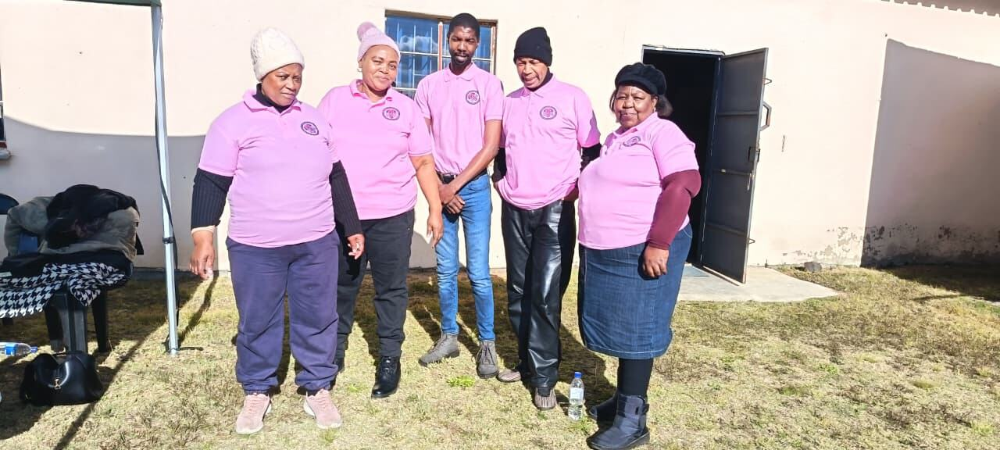

Prevention is better than cure.
Sibusisiwe Cancer Care Center is a community-based cancer support organisation committed to assisting cancer patients and their families throughout their cancer journey.


Welcome to Sibusisiwe Cancer Care Center
We focus on improving access to care, providing compassionate psychosocial support, assisting patients with transportation to medical appointments, supporting families and caregivers, and raising awareness about cancer within our communities.
We recognise that cancer affects more than a patient's physical health. Our approach is centred on supporting the patient as well as the family.
How we support patients and families
Practical and emotional support, close to home.
Patient transport
Getting patients to medical appointments and chemotherapy, and home again where appropriate.
Learn moreHome-based psychosocial support
Support delivered through appointments in patients' own homes.
Learn morePatient & family counselling
Individual, family and patient-and-family sessions in a safe, supportive space.
Learn moreNavigation & care coordination
Helping patients and families understand and navigate the services involved in their care.
Learn moreCancer awareness & education
Talks, campaigns and education that encourage people to learn about cancer.
Learn moreCommunity outreach & support
We take support to where people are: in halls, churches, schools and community events.
Learn moreOur vision is to contribute towards a community where cancer patients and their families can access compassionate, accessible and coordinated support.
Out and about in our communities
Awareness talks, outreach and events, bringing cancer education to the people who need it.


Want to support our work?
Partner with us to help us reach and support more cancer patients and families.